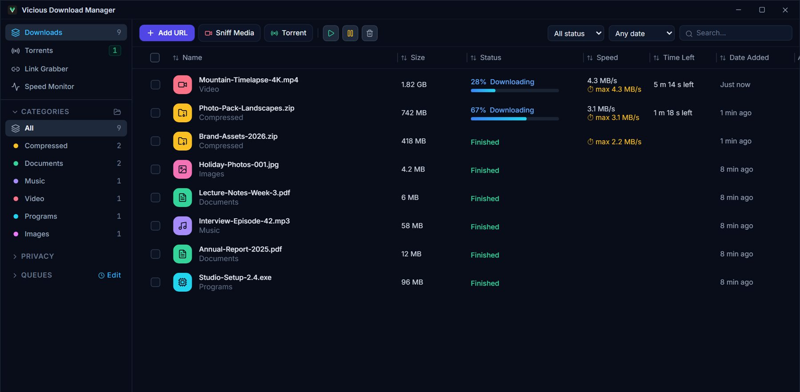
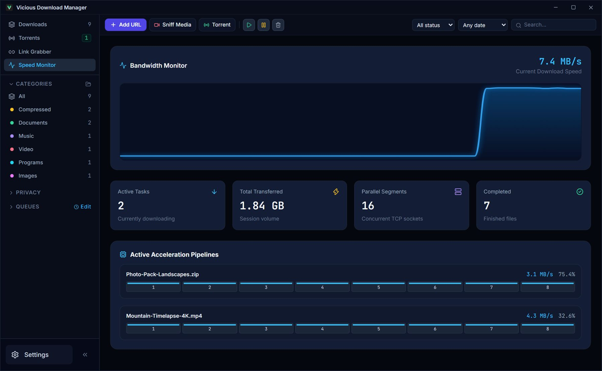
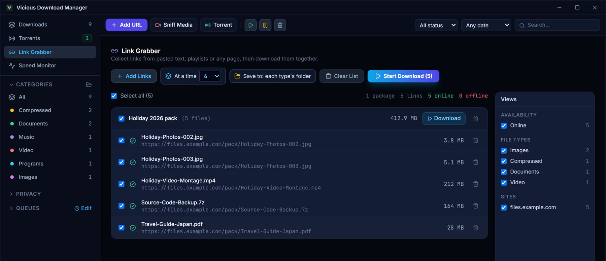
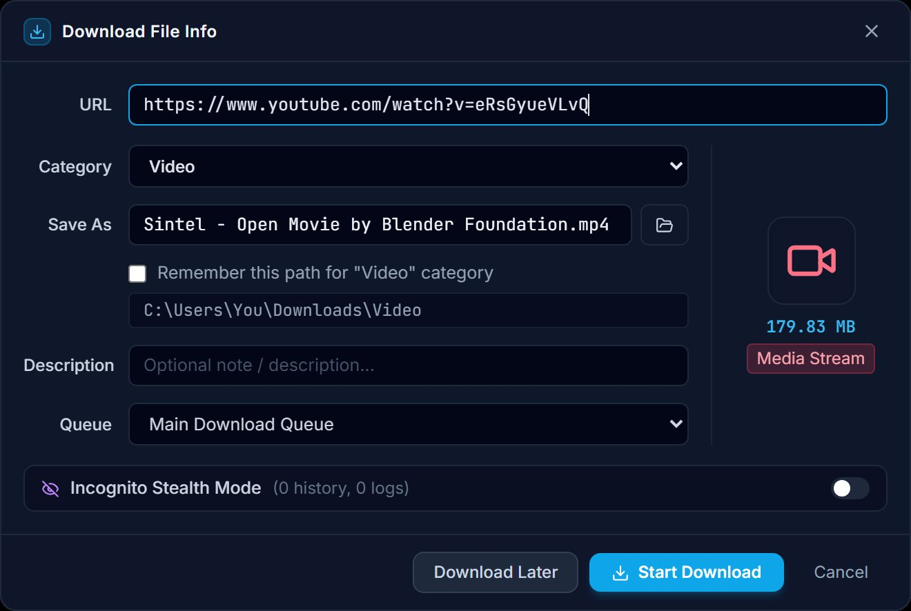
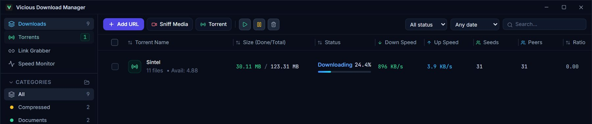

Vicious Download Manager (ViciousDM) saves videos and music from YouTube and other social media sites, runs torrents, collects links from any page, and takes over your browser's downloads, with queues, speed limits and a fast engine behind it all.
These are real windows of the app, with sample downloads.

Every download in one list. Progress, speed and time left, categories that each have their own folder, and a speed limit for a single download when you want one.

See your speed live. The speed monitor shows your bandwidth as it happens and what each running download is using.

Paste links, get a checked list. Sizes and availability are looked up for you, links are grouped into packages, and a whole batch can go to one folder you pick.

Videos and audio from YouTube and social media. Paste a video page and the name, size and folder are filled in. Choose the quality, or audio only, then press Start.

A torrent client built in. Magnet links and .torrent files, with seeds, peers, speed and share ratio at a glance. You pick which files to fetch, and can change that while it runs.
What it does
The details, so you know what you are installing.
Video and audio downloader
YouTube and social media
Save videos from YouTube and other video and social media sites, picking the quality and seeing its size before you start.
Download just the audio as MP3 or M4A; a "Download this audio" button appears on pages that play music.
Streaming (HLS) links with size and remaining-time estimates.
A link that only has sound is filed as audio in your Music folder.
Torrents
built in
Magnet links and .torrent files.
Choose files, switch them on or off while it runs, and mark some to download first.
Speed limit, seeding that stops at a share ratio, and a choice to keep or delete the files when you remove a torrent.
Tracker list management.
Link Grabber
many links, one click
Paste text, playlist addresses, or scan a web page to collect links.
Group them into packages, filter by site, file type and availability.
Download a batch into one folder, with a sub-folder named after the package.
Links sent by websites (Click'n'Load) arrive here too.
Browser extension
Chrome · Edge · Brave · Opera GX
Takes over browser downloads and sends them to the app.
A download button on web video players, with a choice of quality.
A right-click menu on links, images and videos.
Excluded Sites: list websites the app should leave alone.
Stay in control
queues and limits
Queues that open and close at set times, with a limit on simultaneous downloads.
Speed limits for everything together or for one download.
Shut the computer down when a queue or a download is finished, with 60 seconds to cancel.
Incognito downloads that leave no record in the history.
Tray icon, start with Windows, themes, and a "what's new" window after each update.
Fast, reliable downloads
the engine
Each file is downloaded over several connections at once, so it finishes sooner.
Pause and resume, also after a restart or when the internet drops and returns.
Change link: continue an unfinished download from a new address when the old one expired.
Disk space check before a download starts; taken names become "name (1)", "name (2)".
Up and running in a minute
The browser extension is optional: the app works on its own too.
Install the app
Download ViciousDM-Setup from the latest release and run it. It updates itself from then on.
Add the extension
Use the Install button in Settings, Browser Integration, or load the extension folder on your browser's extensions page.
Download
Click a download link in the browser, press the button on a video, or paste an address into the app.
Latest release
Get Vicious Download Manager
Free for Windows 10 and 11. The installer and the browser extension are on the release page.
A Windows desktop app that downloads videos and audio from YouTube and other sites, runs torrents, collects links, and takes over your browser's downloads, with queues, schedules and speed limits. Its short name is ViciousDM.
Is it free?
Yes, it is free to download and use.
Which browsers does it work with?
Chrome, Edge, Brave and Opera GX, through the included extension. Firefox is not supported yet.
Does it work on Mac or Linux?
Not yet. A Mac version is planned.
How do I update it?
The app checks for new versions by itself, and Settings, About lets you update at once. After an update a "what's new" window tells you what changed and whether the browser extension needs updating too.
Where do I report a problem?
Open an issue on GitHub. Settings has a log of recent warnings and errors with a Copy button, which helps a lot.